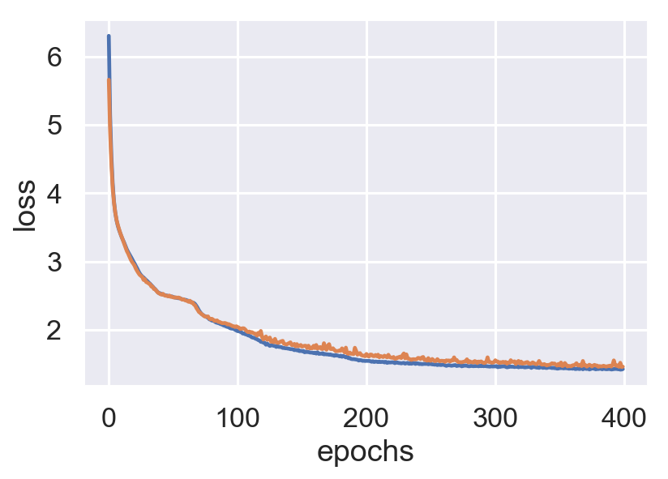
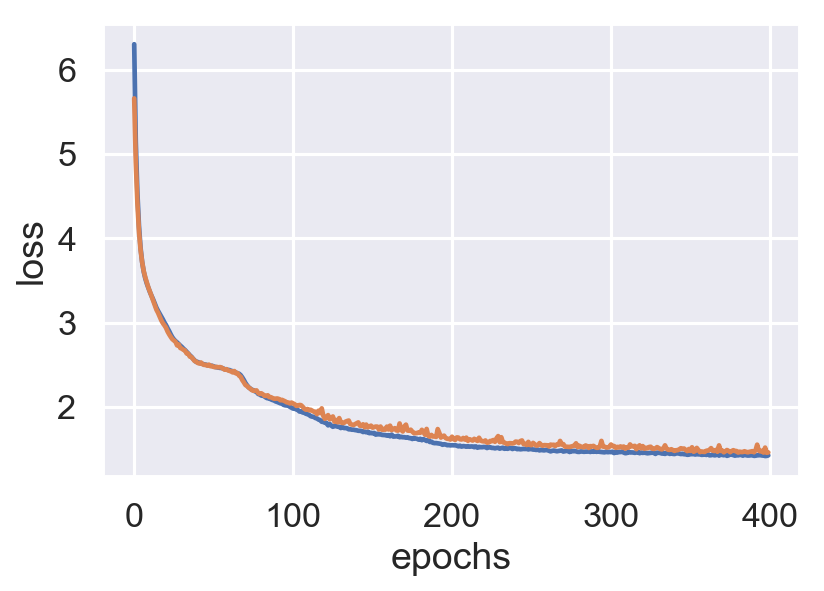

def mdn_loss(y_true, y_pred):
# Split the inputs into paramaters
out_mu, out_sigma, out_pi = tf.split(y_pred, num_or_size_splits=[N_MIXES, N_MIXES, N_MIXES],
axis=-1, name='mdn_coef_split')
mus = tf.split(out_mu, num_or_size_splits=N_MIXES, axis=1)
sigs = tf.split(out_sigma, num_or_size_splits=N_MIXES, axis=1)
# Construct the mixture models
cat = tfd.Categorical(logits=out_pi)
coll = [tfd.MultivariateNormalDiag(loc=loc, scale_diag=scale) for loc, scale
in zip(mus, sigs)]
mixture = tfd.Mixture(cat=cat, components=coll)
# Calculate the loss function
loss = mixture.log_prob(y_true)
loss = tf.negative(loss)
loss = tf.reduce_mean(loss)
return loss
model.compile(loss=mdn_loss, optimizer='rmsprop')


 
